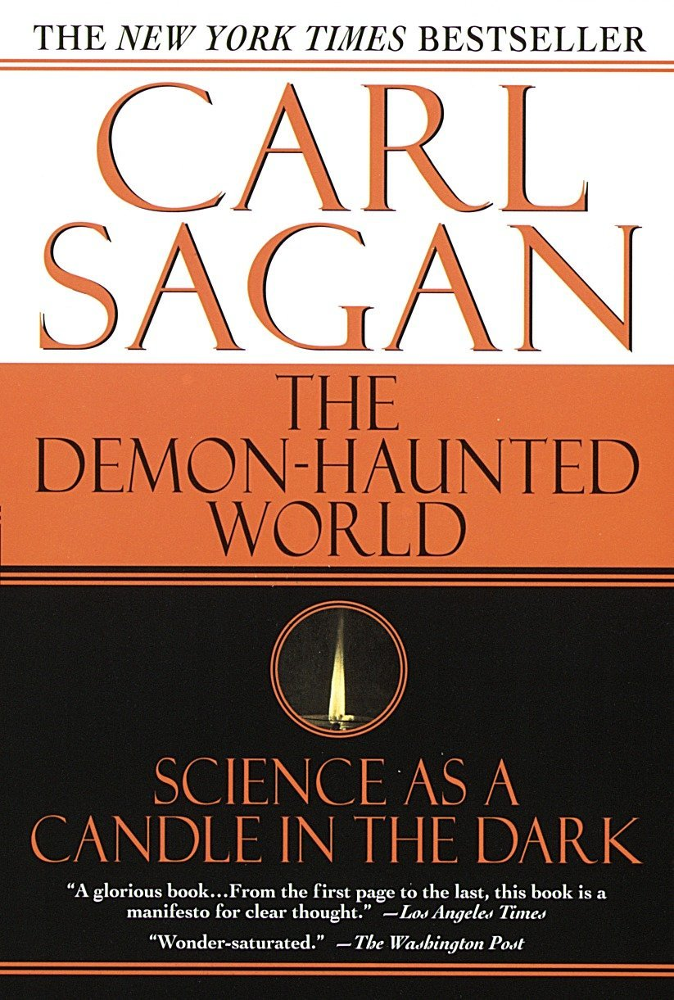
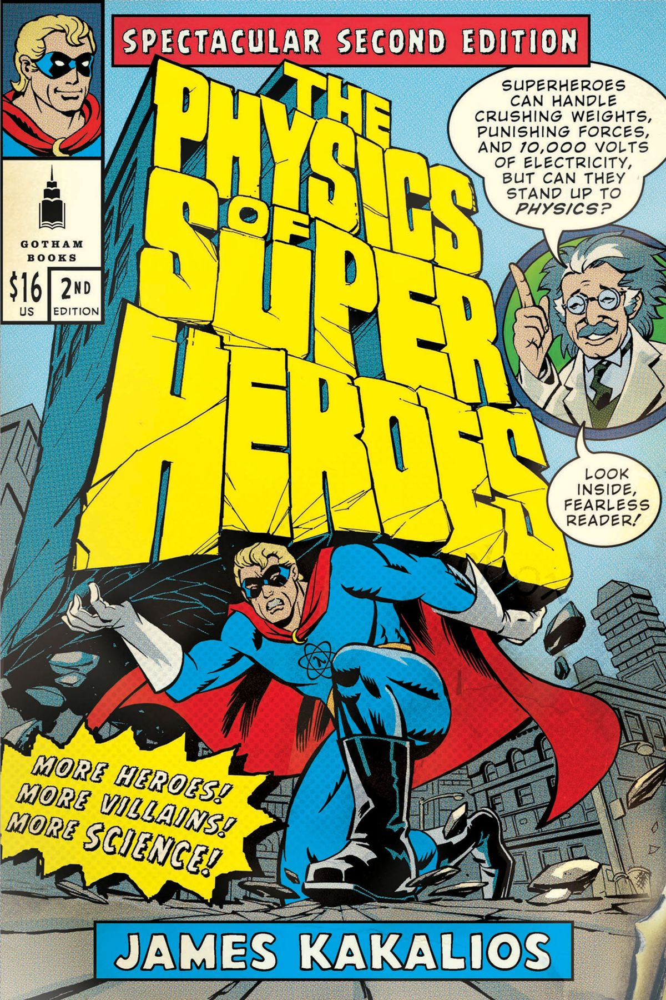

The Courageous
Wednesday • April 8th 2020 • 12:34:35 am
Dame Millicent Garrett Fawcett

English political leader, activist, writer and feminist icon. Known as a
campaigner for women's suffrage via legislative change, from 1897 until
1919 she led Britain's largest women's rights organisation, the National
Union of Women's Suffrage Societies.
The road between the past and the future is long, but it continues unbroken.
Relative to their beginnings, many will find just enough comfort and stop,
and often block traffic.
If you rise in class. Your teachers will fight you, because they just want
to do their job, go home, and get paid.
If you rise in class. They will say you are disrupting the class and throw
you out, because they just want you to shut up so they can finish their job
and go watch some TV.
You can talk to the Principal or Dean, but they'll just tag you as "Gifted"
and you'll graduate from Adult Ed so fast you'll struggle to remember where
it all started and what the battle was for.
Because The Battle Is Not For You
The battle is for those that come; after you.
In short term, you get a sweet sliver of solace as you learn that in the
end all your troubles ended up counting towards protecting others from the
same.
In long term, you help the world grow, it won't be your world, it will be
the world of the future.
The battle for real education, and enjoying the fruits of real education
are two separate things.
It will make you tired.
How dare you? You have stolen my dreams and my childhood.
Bad News
There are very few Alternate Education resources, and as you rise you
realize that the Start-up Accelerator rates are extremely low, almost too
low.
Nothing, nothing is as sweet and easy as putting up with broken education,
the broken rules, the status quo, staying in school, getting some "good"
grades, making your parents happy.
Nothing is as easy as forgetting all of that ever happened, and make up
excuses after excuses, forgetting everyone and everything, and never
looking back.
Alas, Dear Henry comes to our rescue.
Quote by Henry David Thoreau
I went to the woods because I wished to live deliberately, to front only
the essential facts of life, and see if I could not learn what it had to
teach, and not, when I came to die, discover that I had not lived.I did not wish to live what was not life, living is so dear; nor did I wish
to practice resignation, unless it was quite necessary.I wanted to live deep and suck out all the marrow of life, to live so
sturdily and Spartan-like as to put to rout all that was not life, to cut a
broad swath and shave close, to drive life into a corner, and reduce it to
its lowest terms...-- Henry David Thoreau - https://en.wikipedia.org/wiki/Henry\_David\_Thoreau
The Good News
Real Education, is not about getting really educated.
It is about Your Life, Dignity, Authenticity, Health.
Life that revolves around sweet and easy and making everyone else happy is
not a healthy life.
Faith of the Heart

Article One: Inherent Dignity, Nobility.
The first and foremost, you must Retain Your Dignity, and your Nobility.
No one is to treat you as means to their end, to their paycheck, or
vacation, or else.
You are not to be silenced, you are not to go quietly into the night, you
are to rage, to rage against the dying of the light.
Self Education starts With Life Changing Books
Best way to understand a book, is to listen to the Author reading it. And
the best way to listen to a book, is while climbing a great mountain.
A Short History of Nearly Everything

The Demon-Haunted World: Science as a Candle in the Dark

Death by Black Hole: And Other Cosmic Quandaries

What If?: Serious Scientific Answers to Absurd Hypothetical Questions
The Physics of Superheroes

Mind Mapping
The best tool to refine your vision is Mind Mapping. Visit [List of
concept and mind-mapping software](https://en.wikipedia.org/wiki/List_of_concept-_and_mind-mapping_software) for more.
Visit Cmap Homepage at Florida Institute for Human & Machine Cognition
(IHMC) for a free download.
Want to learn better? Start mind mapping

How to Mind Map
Mind Map vs Concept Map
Concept Mapping with Cmap
Concept Maps 1

Concept Maps 2

Behavior-Driven Development (BDD)
The best programming language for Leaders, is English. In BDD context, a
structured subset of English.
You can write you entire program in BDD, and coordinate your team at the
same time.
In the world of computers, teams can be distributed across the entire
world. Some teams, can have revolving doors. And sometimes you may not even
need doors, as you can post a BDD Test Issue on Bounty Source or
similar.
What is Behavior Driven Development?

Learning Online and Tool Examples
Shopify’s Director of Production Engineering explains how reading broadly
helps him get to the bottom of things: [How to Make Yourself Into a
Learning Machine](https://superorganizers.substack.com/p/how-to-build-a-learning-machine)
Readwise Get the most out of what you read, Readwise makes it easy to revisit and learn from your ebook & article highlights.
Anki Powerful, intelligent flash cards. Remembering things just became much easier.